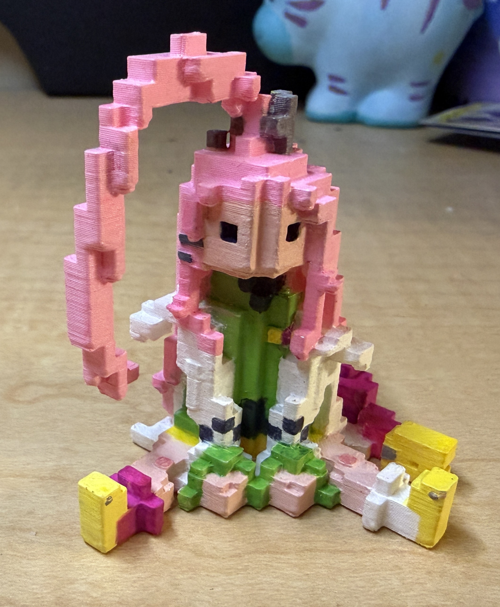
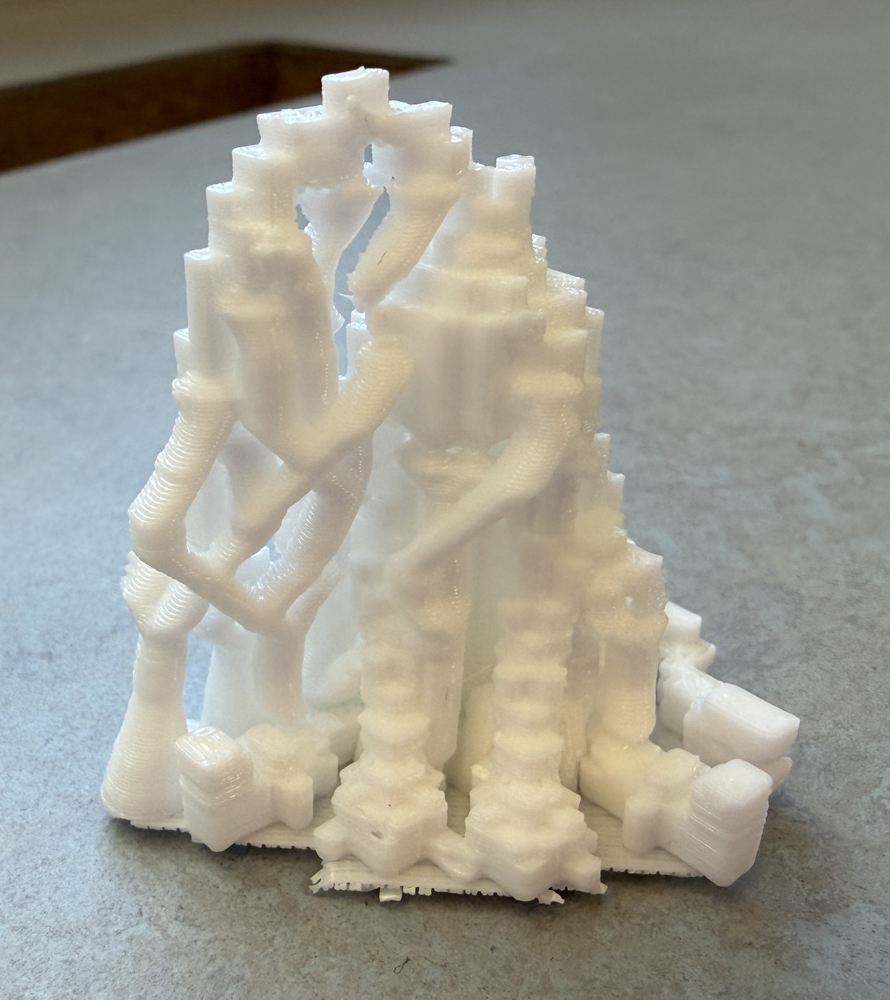
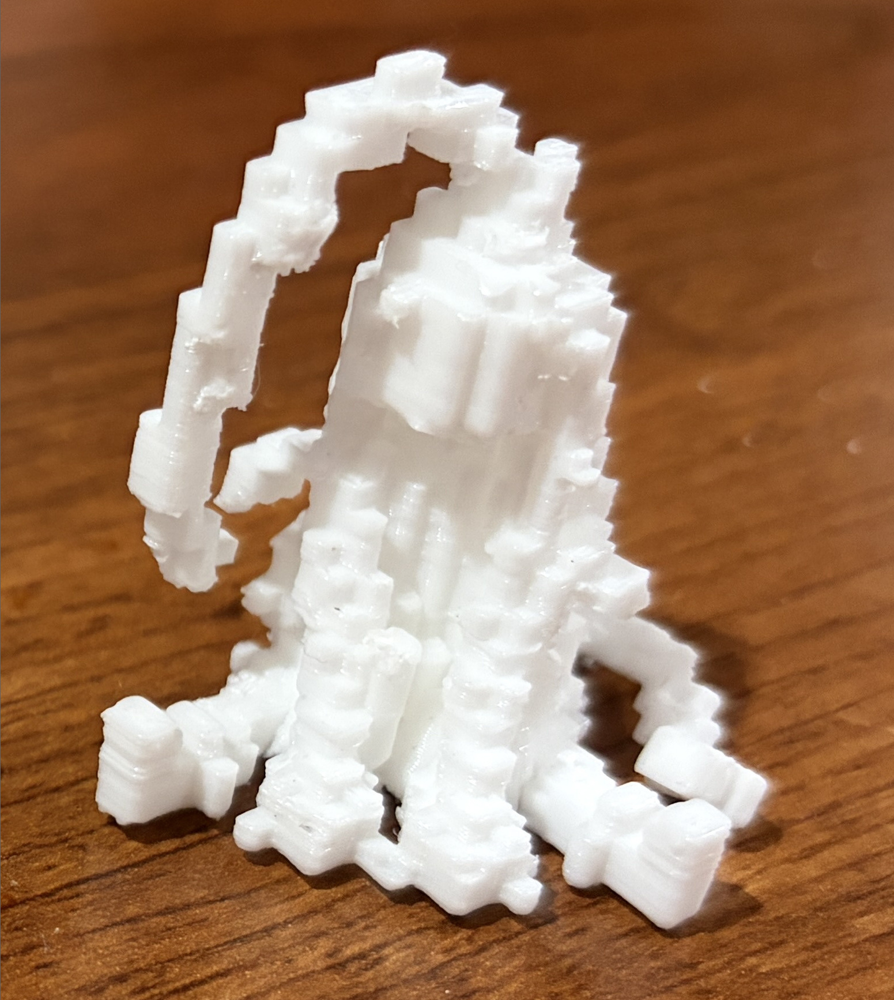
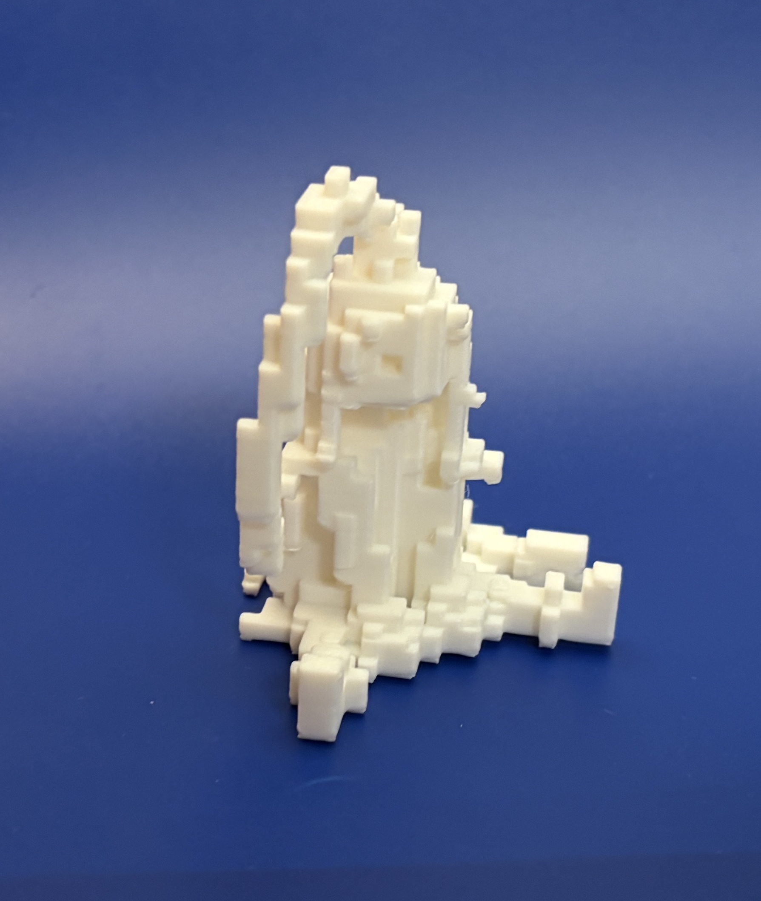
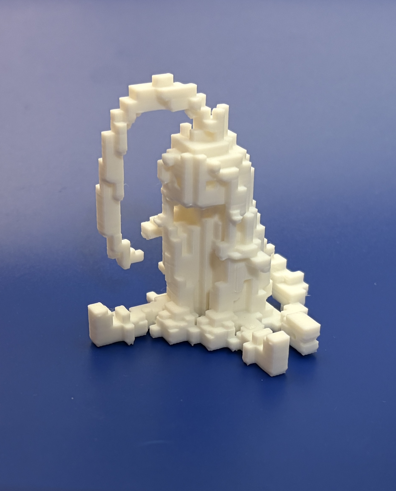

Here is a painted 3d print of the Minecraft build of Aino.
Dimensions (LxWxH): 2 x 1.75 x 2.17 inches
These are pictures of the draft print. When I was removing the supports, the robot arm
in the back fell off, so for the final draft, I modified it to attach onto her coat. I
also moved the arms closer to the body to minimize the amount of supports needed.




Here are some pictures of the final print (unpainted).